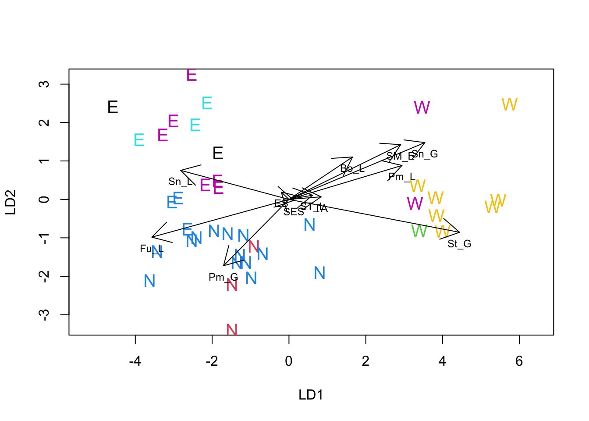

In this, final, section of the Workshop we turn to multivariate hypothesis testing. Following on from the theme developed in the last section we will use a combination of ordination and another method to achieve the analysis. In this case we will combine Linear Discriminant Analysis (LDA) with Multivariate Analysis of Variance (MANOVA). LDA is also known by a number of other names, the most commonly used being Discriminant Analysis, Canonical Variates Analysis, and Canonical Discriminant Analysis.
The major conceptual difference between this section of the workshop and the previous ones concerns how we use existing information that we might have about grouping among the objects. In the previous analyses while we had information about groupings we did impose it on the analysis in any way. So, for example, any tendency for fields from the same region to cluster together was an emergent property of the shared features of those fields, but the algorithms running the PCA, PCO or clustering were “blind” to the existence of the groups.
In LDA we take a different approach and impose grouping on the objects with a view to asking one or or more of three key questions:
It is worth noting that while LDA has a theoretical parametric basis (one can think of it as a tool for visualizing the space within which the hypothesis tests in a MANOVA occur) it does not have to be used for hypothesis testing; it can be used for exploratory analyses, just like the other techniques we have already discussed. However, you can get into some philosophically troubled waters if you use LDA in an exploratory, non-test based way and then use MANOVA to test for differences among groups having already seen that the differences exist. Multivariate fishing expeditions suffer from all the same dangers (and probably more) as their univariate cousins. So, to play it safe here are suggested sequences of analysis that avoid the dangers of fishing for significant results:
With the MASS package installed, the first thing to do is to make the library of procedures in the package available for use:
library(MASS)Ignoring our own advice, we will demonstrate the combination of LDA and MANOVA on the field survey data by reanalyzing it to determine if there is a significant difference among the regions with respect to diseases. This is the multivariate equivalent of the simplest type of ANOVA model - a single categorical factor. In this case our null hypothesis is that there is no difference among regions on the intensity of wheat diseases, or equivalently that disease intensities do not differ among regions more than would be expected by chance alone.
Since we have stated our hypothesis in advance we can do the analyses in any order we want so We will run the LDA first. You will need the disease data set. If you still have the data set that was used for the PCA on the correlation matrix you can use it to make a data frame to hold the data variables. If you don’t have the PCA data set still available you will need to repeat the necessary steps to recreate it.
PCA1_data <- read.csv("data/PCA1_Survey.csv", head = TRUE)
PCA1_cordata <- PCA1_data[c(-7, -8, -9)]
lda_expl <- PCA1_cordata[, 3:14]The lda procedure is a little idiosyncratic in the way that it expects the information that it acts on. You can either enter a model formula, or give it a set of explanatory variables in a data frame and a factor to test using the “grouping” option. Below we use the second approach.
region_lda <- lda(lda_expl, grouping = PCA1_cordata$region)
region_lda## Call:
## lda(lda_expl, grouping = PCA1_cordata$region)
##
## Prior probabilities of groups:
## E N W
## 0.3414634 0.4146341 0.2439024
##
## Group means:
## ST_L St_G Sn_L Sn_G Pm_L Pm_G Fu_L
## E 2.071429 0.0000000 1.1428571 0.2857143 0.3571429 0.1428571 0.7142857
## N 1.805882 0.8352941 0.2529412 0.0000000 0.6000000 0.7176471 1.2117647
## W 5.000000 2.2000000 0.1000000 0.1000000 0.0000000 0.0000000 0.9000000
## Bo_L SM_E ES SES TA
## E 0.6428571 0.9285714 11.84643 8.800714 0.000000
## N 0.3176471 0.0000000 0.00000 5.049412 1.864706
## W 0.9000000 1.5000000 7.86600 6.931000 2.640000
##
## Coefficients of linear discriminants:
## LD1 LD2
## ST_L 0.24561018 0.04340412
## St_G 1.77682294 -0.34217993
## Sn_L -1.12748453 0.30222420
## Sn_G 1.41477636 0.59130386
## Pm_L 1.17698492 0.35323668
## Pm_G -0.68126225 -0.69007369
## Fu_L -1.42770688 -0.39274438
## Bo_L 0.66179996 0.44118265
## SM_E 1.16312030 0.56955987
## ES -0.07924553 0.07603390
## SES 0.05175887 -0.01021430
## TA 0.33463741 0.02697694
##
## Proportion of trace:
## LD1 LD2
## 0.8355 0.1645The format of the output from the lda should be somewhat familiar now. The first section is a summary of the proportion of objects in each of the categories of the grouping factor. These are labeled prior probabilities because lda has a predictive capacity and if one has “unknown” objects it can be used to predict their identity. In that case, the final (or posterior) probability of each class will depend on the proportions in the “training” set and in the “test” set of observations. We will not explore that aspect of lda in this workshop.
The second section of output shows the mean values for each of the variables for each of the levels of the grouping factor. Inspection of this information will start to reveal the nature of any differences there might be among class of the grouping factor. In this case we can see that while the East and West have notably high values for some of the diseases the North appears to have a lower range of values.
The third section of output shows us the coefficients (or loadings) applied to each of the data variables in the construction of the discriminant axes. Conceptually LDA has a lot in common with PCA, but in the case of LDA the new “components” or discriminant functions are formed with the constraint that they maximize the ratio of between group to within group variance. This contrasts PCA, where the new variables are formed simply to maximize the amount of variance captured overall. Unlike the situation with PCA where the maximum number of non-zero components is one less than the number of original data variables, with LDA the number of possible axes is one less than the number of groups. In the present case this means that we can form at most two discriminant axes because we have three levels (N,E and W) in our grouping factor. The final section of output shows the proportion of the variance ratio accounted for by each of the axes. Just as in PCA, the axes are formed so that they capture the variance structure in decreasing amounts. In the case of the disease data, the first LDA accounts for 83.5% of the variance ratio, while the second axis accounts for the remaining 16.5%.
The MASS package includes a special version of plot() that accepts an LDA obect and produces a Scatter plot of the data objects in the LDA solution space, labeled with the identifier of the grouping factor. In its basic form it gives a simple diagnostic plot of the extent to which discrimination among the levels of the factor has been achieved.
region_ldaplt <- plot(region_lda)Just as for PCA, we can use a biplot to help interpret the solution of a LDA. Unfortunately MASS does not include a biplot procedure for LDA, but the following function written by a contributor to Stackoverflow produces reasonable results.
lda.arrows <- function(x, myscale = 1, tex = 0.75, choices = c(1, 2), ...) {
## adds `biplot` arrows to an lda using the discriminant function values
heads <- coef(x)
arrows(
x0 = 0, y0 = 0,
x1 = myscale * heads[, choices[1]],
y1 = myscale * heads[, choices[2]], ...
)
text(myscale * heads[, choices],
labels = row.names(heads),
cex = tex, pos = 1, offset = 0.5
)
}Once the function has been loaded you can use it just like any other procedure in R. The following code replots the LDA solution with larger labels, makes sure the physical scale of the plot reflects the mathematical scale, adds color to the labels and adds the vectors representing the variables. We added an extra twist to the plot by using the colors assigned by the clusters formed in the NHCA, so we can see where members of those clusters occur when the data are re-analyzed to maximize regional differences.
NHCA_data1 <- data.frame(PCA1_cordata[, 1:2], scale(PCA1_cordata[, 3:14]))
NHCA_fields2 <- kmeans(NHCA_data1[, 3:14], 7)
plot(region_lda, asp = 1, col = NHCA_fields2$cluster, cex = 1.25)
lda.arrows(region_lda, col = 1, lwd = 1, myscale = 2.5)
Overall, the LDA suggests that there are differences among all three regions. The major difference is between the West and the other two, with fields in the West being associated with diseases typical of wet late season conditions (glume and ear diseases are more intense). The difference between the North and East regions is smaller in absolute terms but nonetheless appears to be a real difference.
To obtain overall significance tests on whether there are differences among the regions we use a MANOVA simultaneously to test all of the disease variables. To fit the MANOVA model we have to supply a list of variables using a cbind() statement and then identify the treatment (or grouping) factor. R uses the tilde (~) to indicate a statistical model. It makes the model more compact to write if we use the data= option to identify a data frame the contains the variables. By default the manova() procedure doesn’t print anything. Since we have already examined the way that the variables and grouping are connected in the LDA, all we really need are the overall tests of significance. There are several such tests for MANOVA which differ in their tendency to type 1 and type 2 errors. Wilks test tends to be conservative while the Hotelling-Lawley test tends to be lax. It’s a good idea to look at all of the options and come to a consensus. In this case, there’s no conflict. All of the tests point to a clear case for rejecting the null hypothesis of no difference among the different regions.
lda_expl <- data.frame(lda_expl)
region_MAN <- manova(
cbind(ST_L, St_G, Sn_L, Sn_G, Pm_L, Pm_G, Fu_L, Bo_L, SM_E, ES, SES, TA) ~ PCA1_cordata$region,
data = lda_expl
)
summary(region_MAN, test = "Pillai")## Df Pillai approx F num Df den Df Pr(>F)
## PCA1_cordata$region 2 1.4986 6.9741 24 56 1.201e-09 ***
## Residuals 38
## ---
## Signif. codes: 0 '***' 0.001 '**' 0.01 '*' 0.05 '.' 0.1 ' ' 1summary(region_MAN, test = "Wilks")## Df Wilks approx F num Df den Df Pr(>F)
## PCA1_cordata$region 2 0.043523 8.5351 24 54 4.286e-11 ***
## Residuals 38
## ---
## Signif. codes: 0 '***' 0.001 '**' 0.01 '*' 0.05 '.' 0.1 ' ' 1summary(region_MAN, test = "Hotelling-Lawley")## Df Hotelling-Lawley approx F num Df den Df Pr(>F)
## PCA1_cordata$region 2 9.5202 10.313 24 52 1.942e-12
## Residuals 38
##
## PCA1_cordata$region ***
## Residuals
## ---
## Signif. codes: 0 '***' 0.001 '**' 0.01 '*' 0.05 '.' 0.1 ' ' 1